CSCI1250 Computer Animation
Fall 2025 • 2 weeks
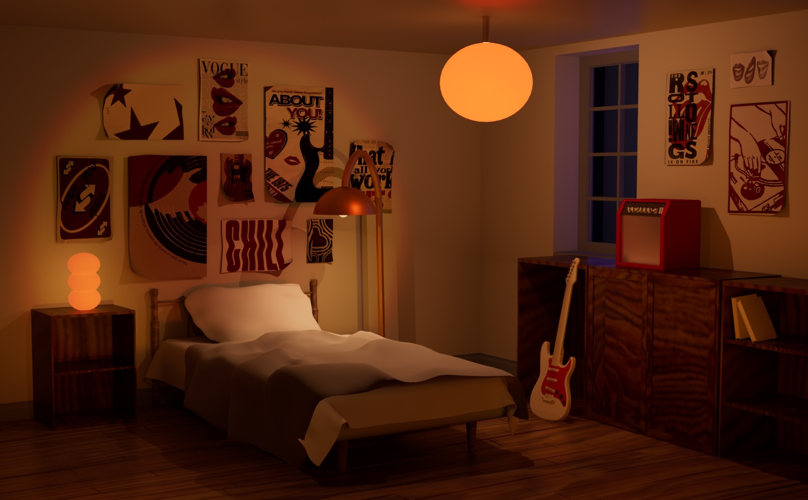
For this project, I was given a basic Maya scene of a room, it had no lights or shaders. I was tasked with adding shaders and lights to create a focal point or a mood for the scene
Before editing the file itself, I wanted to find references of the mood I wanted to create. I look on Pinterest for images similar to what I was going for. This also helped me when it came to creating realistic light effects. I really wanted to create a inviting mood with warm lighting. I wanted to include some music elemets since that's the vibe I'd go for myself.
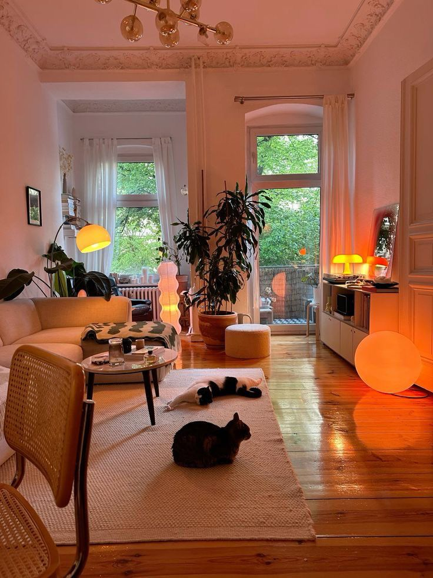
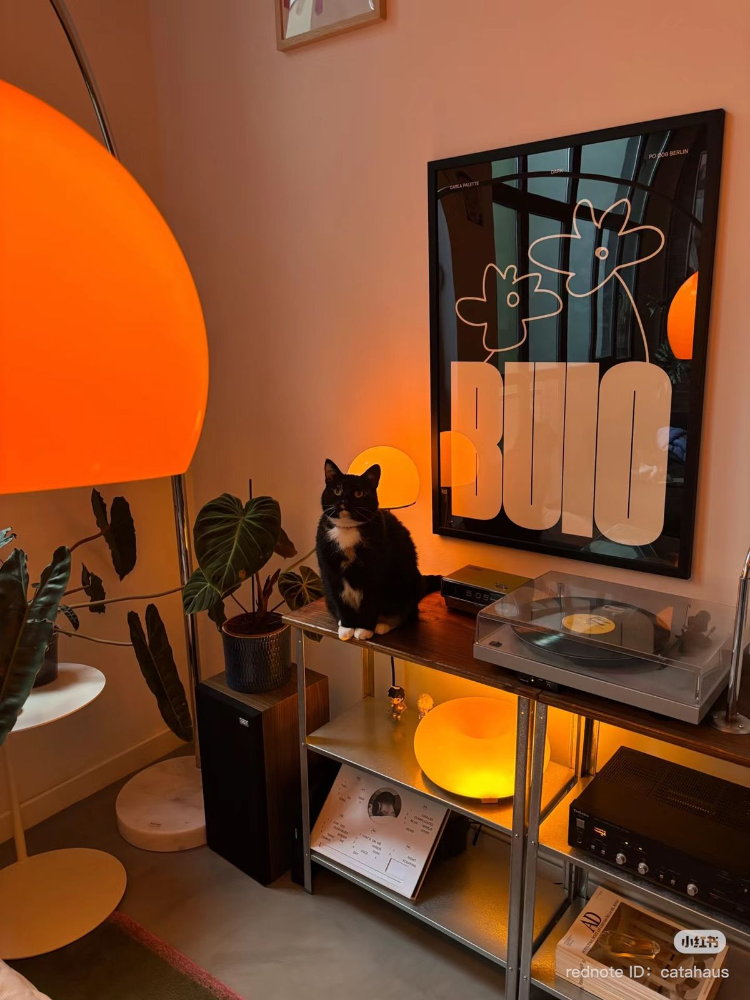
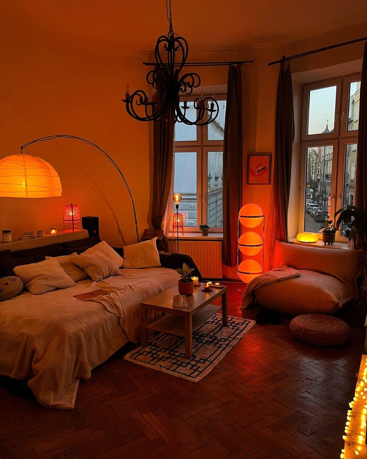
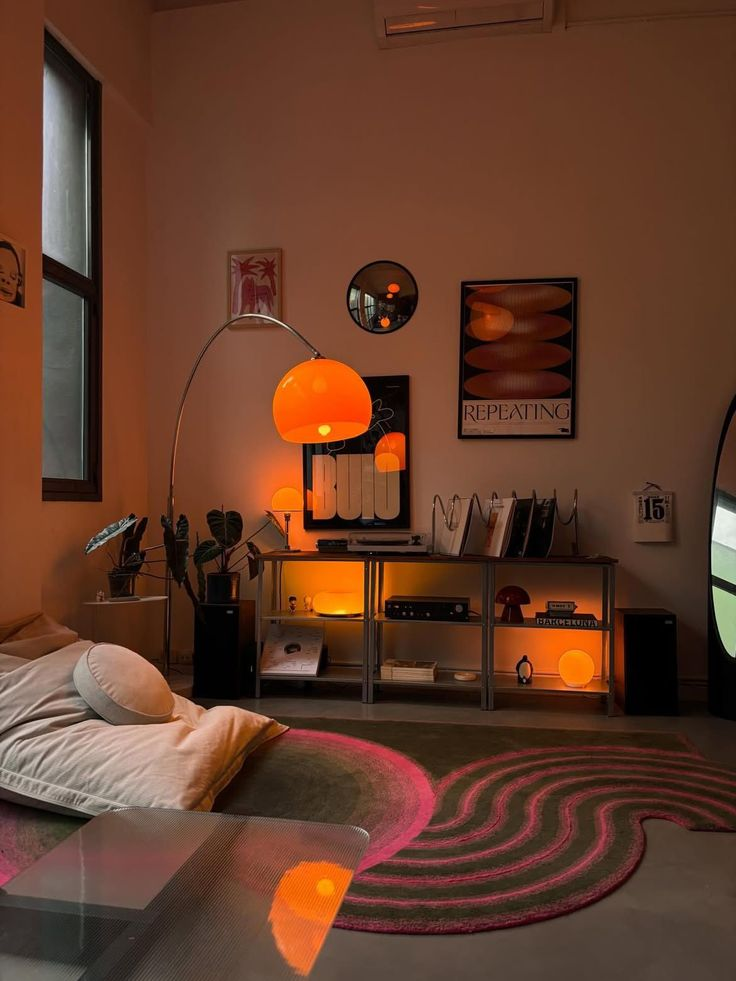
The first thing I did was shade all the objects. I wanted everything to have a warm tone, so the walls are an off white, the wood is a warmer tone, and the red is very warm as well. To maintain cohesion across the scene, I kept the posters to be off-white and red to match.
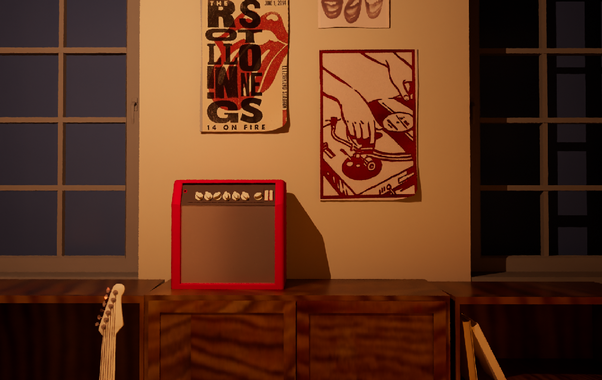
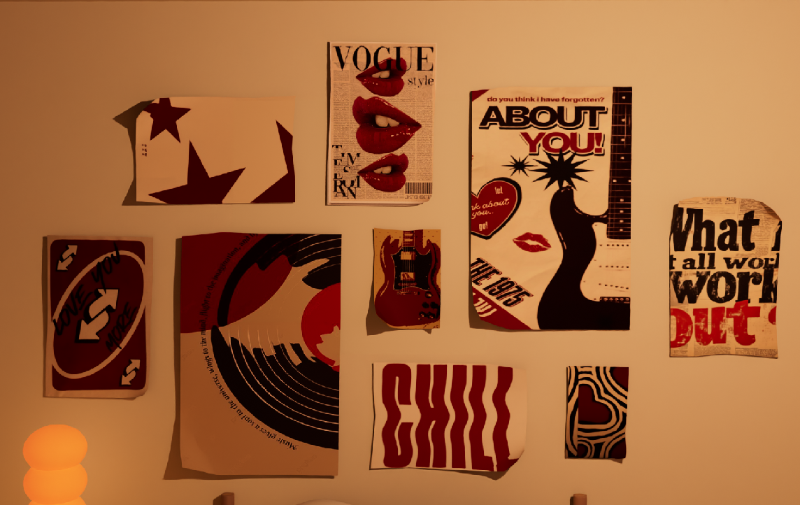
Lastly, I added lights to the scene. I created a lot of little lights across the room to match the vibe of my reference images. Additionally, I used an area light and mapped the color to a photoshop file I made with colored rings, to mimic a sunset lamp. Also, I added a soft blue light coming in through the windows to give the impression of late evening.
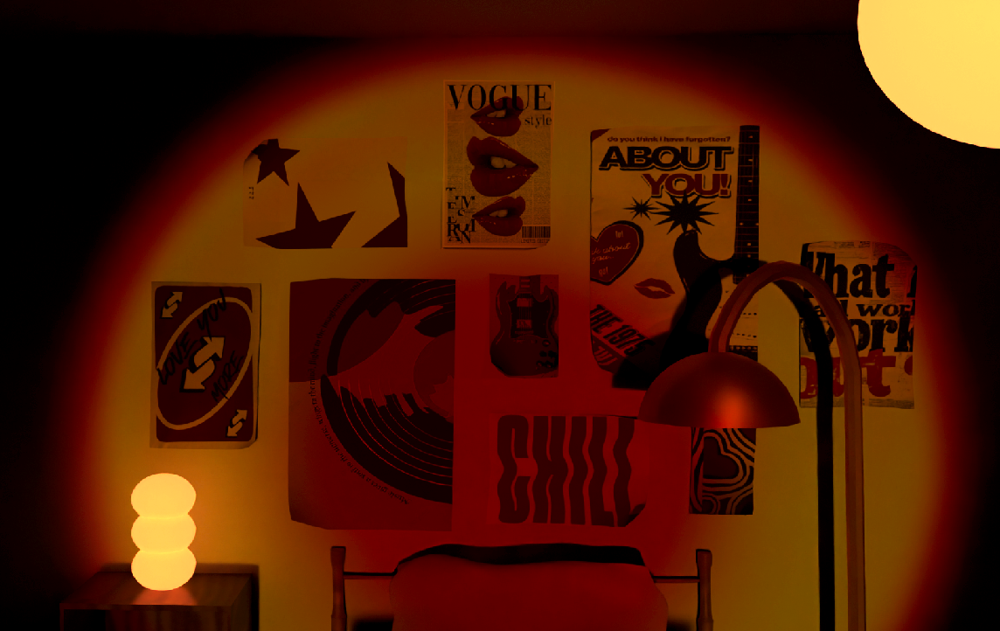
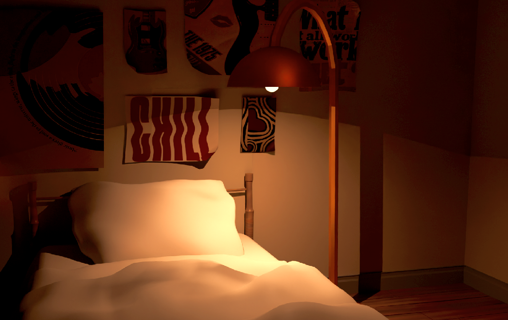
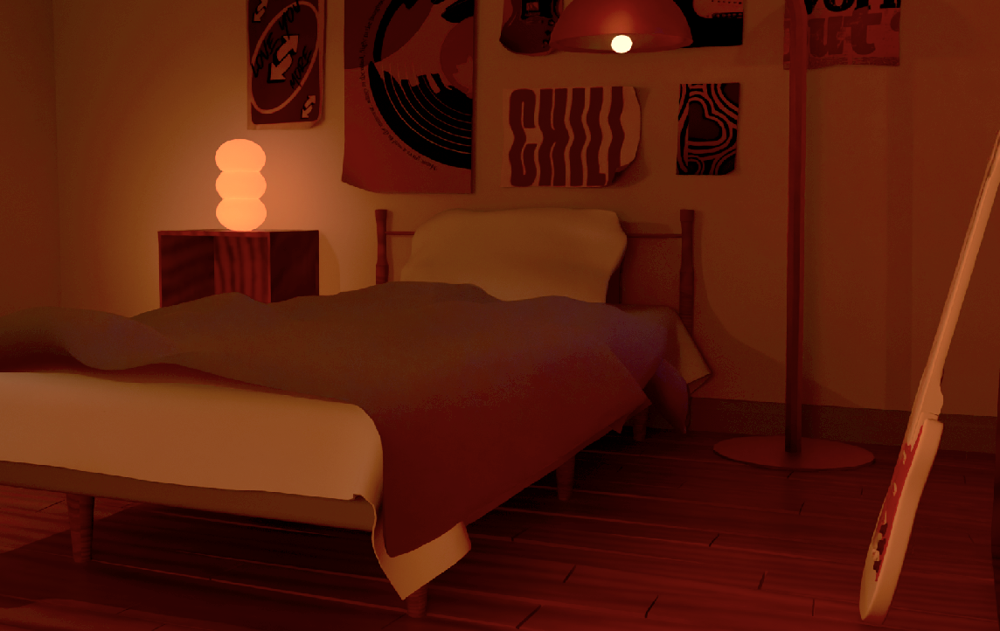
The result is a very moody evening scene. I really enjoyed playing with lights in this project and tweaking them to see what kind of effects I could create.
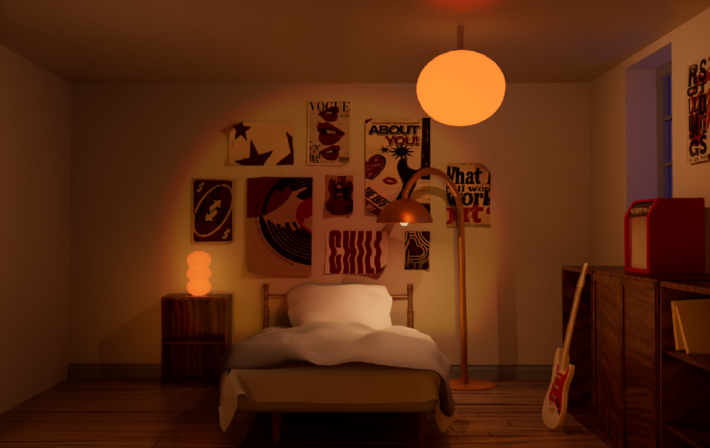
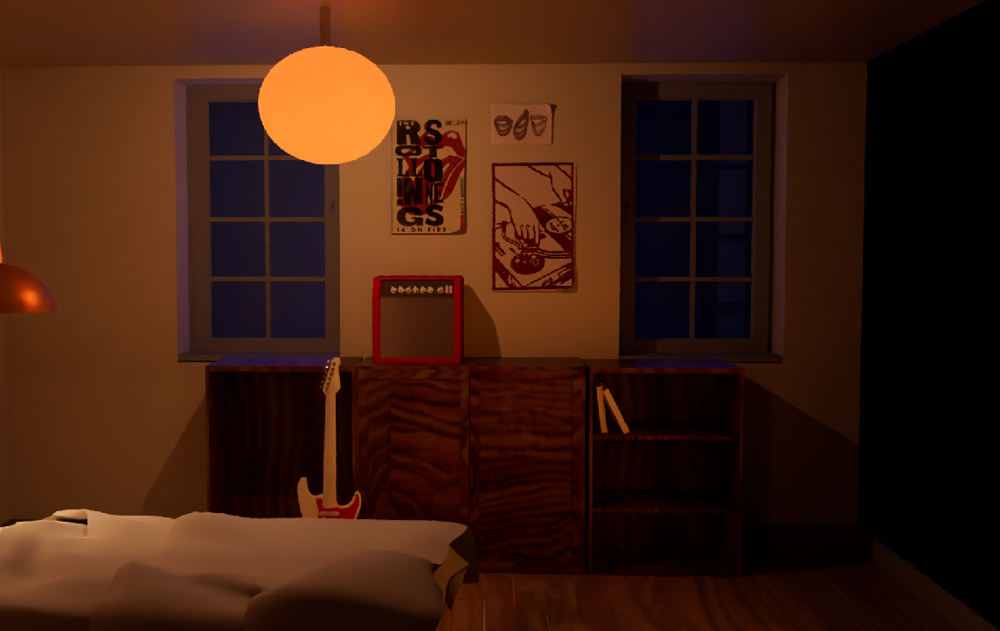